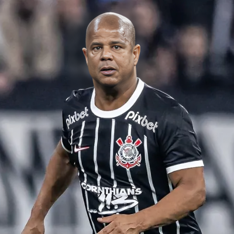
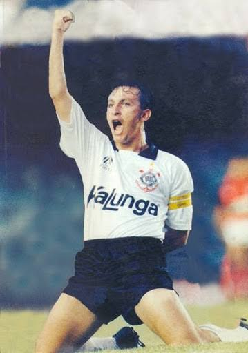
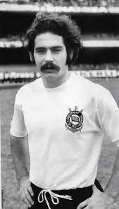
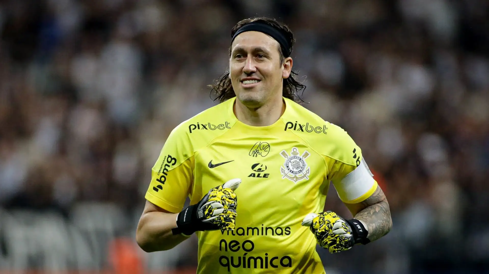
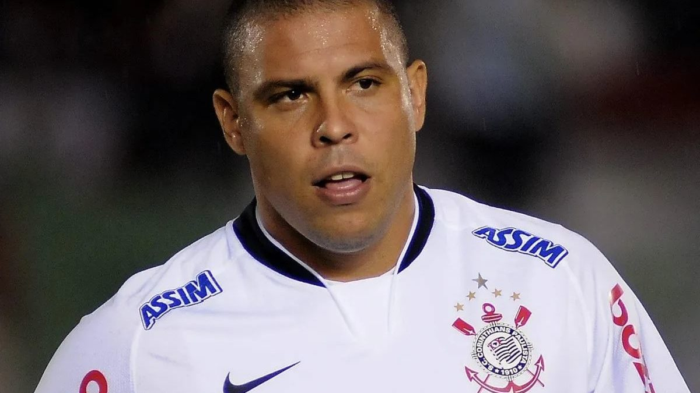

Sócrates
Sócrates Brasileiro Sampaio de Souza Vieira de Oliveira, mais conhecido como Sócrates, foi um dos maiores jogadores da história do futebol brasileiro, destacando-se especialmente no Corinthians. Nascido em 1954, ele foi uma figura central na Democracia Corinthiana, movimento que defendia a gestão democrática do clube, com jogadores participando das decisões. Dentro de campo, Sócrates era um meia habilidoso, conhecido por sua visão de jogo e passes precisos. Conquistou o Campeonato Paulista em 1979 e 1982, além de ser parte fundamental da seleção brasileira na Copa de 1982. Sua postura intelectual e engajamento político também o tornaram uma figura de destaque fora dos campos, defendendo a liberdade de expressão e os direitos civis durante a ditadura militar. Sócrates faleceu em 2011, aos 57 anos, deixando um legado como ícone do futebol e ativista social.

Marcelinho Carioca
Marcelinho Carioca, ídolo do Corinthians, é um dos maiores jogadores da história do clube. Nascido no Rio de Janeiro em 1971, ele se destacou por sua habilidade em cobranças de falta e sua visão de jogo. Chegou ao Corinthians em 1997 e se tornou peça-chave, conquistando títulos importantes como Campeonatos Paulistas e a Copa do Brasil. Seu estilo irreverente e carisma conquistaram a torcida, e ele ficou conhecido por sua personalidade marcante tanto dentro quanto fora de campo. Marcelinho se destacou também por sua liderança e técnica apurada, sendo considerado um dos maiores cobradores de falta do futebol brasileiro. Após se aposentar em 2014, seu legado no Corinthians permanece vivo, sendo lembrado como um dos maiores ídolos da história do clube.
Neto
José Ferreira Neto, mais conhecido como Neto, é um ex-jogador e comentarista esportivo brasileiro, ídolo do Corinthians. Nascido em 9 de setembro de 1966, em Santo Antônio de Posse (SP), atuava como meio-campista e ficou famoso por sua habilidade em cobranças de falta e liderança em campo. Foi apelidado de "Xodó da Fiel" e foi peça-chave na conquista do Campeonato Brasileiro de 1990 pelo Corinthians.
Rivelino
Rivelino é um dos maiores ídolos da história do Corinthians e do futebol brasileiro. Nascido em 1º de janeiro de 1946, no Rio de Janeiro, ele se destacou por sua habilidade técnica, visão de jogo e pelo famoso "drible do futsal" (também conhecido como "drible da vaca"). Rivelino é lembrado especialmente por sua passagem pelo clube paulista e pela Seleção Brasileira.
Cássio
Cássio Ramos, mais conhecido como Cássio, foi um goleiro que defendeu o Corinthians por 11 anos, entre 2012 e 2024. Considerado ídolo do clube, conquistou diversos títulos, incluindo a Libertadores e o Mundial de Clubes. Ele também é o goleiro com mais jogos e o segundo jogador que mais vezes vestiu a camisa do Corinthians, com 712 partidas.
Ronaldo Fenômeno
Ronaldo Nazário, mais conhecido como Ronaldo Fenômeno, é um dos maiores jogadores de futebol de todos os tempos, e sua passagem pelo Corinthians é marcada por momentos memoráveis. Nascido no Rio de Janeiro em 22 de setembro de 1976, Ronaldo brilhou no futebol mundial com sua habilidade, velocidade e gols impressionantes.
